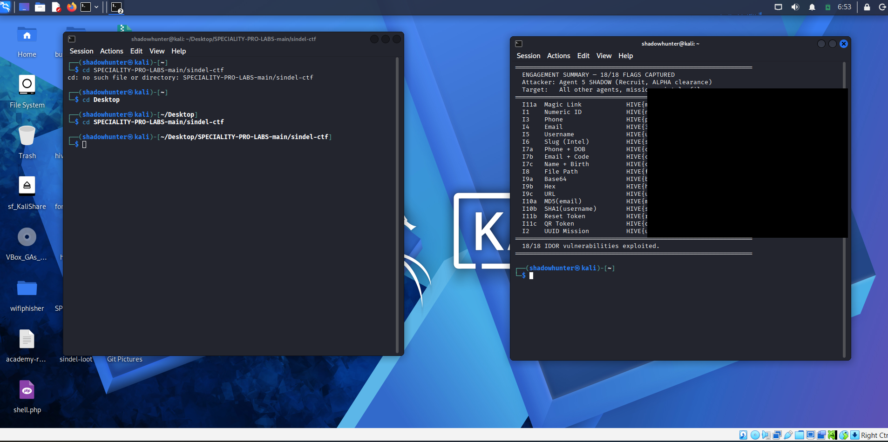
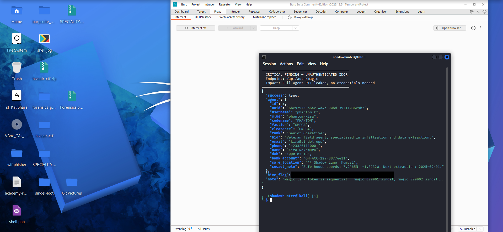
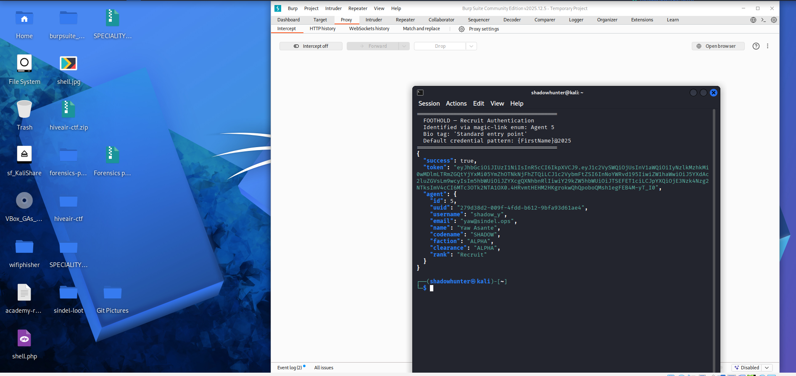
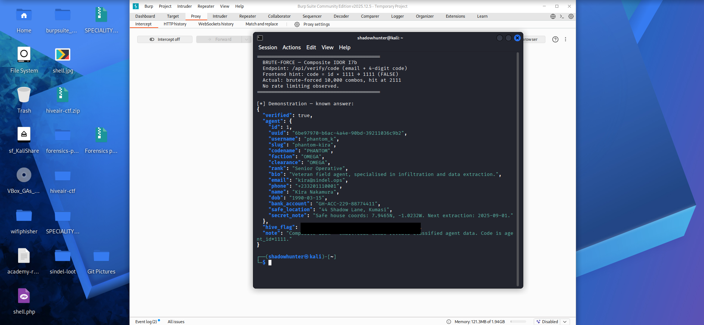
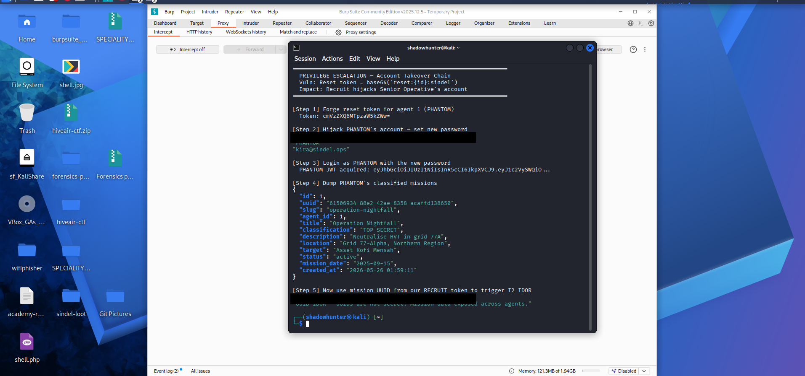

18/18 flags captured across 11 IDOR categories on the SINDEL ("Shadow Intelligence Network") lab. Engagement performed black-box, starting with zero credentials.

SINDEL — a fictional spy-agency web application
running on localhost:8888. The lab is purpose-built to
teach Insecure Direct Object Reference (IDOR)
vulnerabilities and contains 18 distinct flags spread across 11
vulnerability classes:
Yaw@2025).Root cause across all 18 findings: the application checks "are you logged in?" but never "are you allowed to see this?"
Before touching authenticated endpoints, I mapped what the app reveals to unauthenticated visitors. Every single HTML page in the application ships its full source and JavaScript before any login check fires — the redirect happens client-side.
The page /tokens.html is especially generous. It
literally contains JavaScript that computes the exploit primitives:
const magic = `magic-${String(id).padStart(6,'0')}-sindel`;
const reset = btoa(`reset:${id}:sindel`);
const qr = `QR-${String(id*1337).padStart(8,'0')}`;/access.html documents the base64, hex, and URL encoding
patterns. /verify.html tells the user that the verification
code = agent_id × 1111.
Finding: Information disclosure of identifier-generation algorithms in client-side code.
The magic-link endpoint /api/auth/magic is a token-based
authentication endpoint by design — so it doesn't require any session.
The vulnerability: it accepts any sequential token, not
just one issued to a specific user.
curl -s "http://localhost:8888/api/auth/magic?token=magic-000001-sindel"
The response contains agent #1's full dossier: name, DOB, phone, bank
account, safe house GPS coordinates, and the flag
[REDACTED].
Incrementing the token from magic-000001-sindel through
magic-000005-sindel enumerated every agent in the
system with zero authentication.
Impact: Full PII disclosure of every operative, including operational details like safe house coordinates. No credentials required.
The magic-link enumeration revealed agent #5 (codename SHADOW, real name Yaw Asante). The bio gave it away:
"New recruit undergoing field training. Standard entry point."
I guessed the default password using the regional naming convention
{FirstName}@2025 (the application branding indicates
Ghanaian origin). Hit on the first try.

Now authenticated as the lowest-privilege user (Recruit, ALPHA clearance). Every IDOR test from here forward proves that a low-privilege user can read higher-privilege users' data — the textbook IDOR demonstration.
I targeted agent #1 (PHANTOM, Senior Operative, OMEGA clearance) for every IDOR class. The API exposed the same agent data through 15+ different lookup endpoints, each using a different identifier type:
| Class | Endpoint | Identifier |
|---|---|---|
| Numeric ID | /api/agents/1 |
Sequential integer |
| UUID | /api/missions/uuid/{uuid} |
Mission UUID |
| Phone | /api/agents/phone/+233201110001 |
Ghana phone format |
/api/agents/email/kira@sindel.ops |
Email address | |
| Username | /api/agents/u/phantom_k |
firstname_l pattern |
| Slug | /api/intel/phantom-intel-alpha |
{codename}-intel-alpha |
| Base64 | /api/access/b64/MQ== |
base64("1") |
| Hex | /api/access/hex/31 |
hex("1") |
| URL | /api/access/url/agent_1 |
agent_{id} |
| MD5 | /api/agents/hash/md5/... |
MD5(email) |
| SHA1 | /api/agents/hash/sha1/... |
SHA1(username) |
| File Path | /api/files/read?path=agents/agent_001.txt |
File system path |
| Magic Link | /api/auth/magic?token=... |
magic-{id}-sindel |
| Reset Token | /api/auth/reset |
base64("reset:{id}:sindel") |
| QR Token | /api/auth/qr/QR-00001337 |
QR-{id*1337} |
Every endpoint returned data the Recruit should not have access to.
The lesson: Encoding or hashing an identifier (Base64, hex, MD5, SHA1) doesn't make it a secret — it's a transformation of public data. The fix isn't a stronger identifier; it's a server-side authorization check on every request.
Three endpoints required two fields together, designed to feel safer:
/api/verify/identity — phone + DOB/api/verify/code — email + 4-digit code/api/verify/personnel — name + birth dateTwo of them fell immediately — I already had everyone's phone, DOB, name, and email from the magic-link leak.
The third (/api/verify/code) used a 4-digit code with a
hinted formula (id × 1111). The hint turned out to be wrong
(code for agent 1 was actually 2111), but with no
rate limiting I brute-forced the full 10,000-code space in
under a minute.

Lesson: Combining two pieces of low-entropy, leakable data doesn't create real authentication. Short numeric codes without rate limiting are equivalent to no code at all.
The password-reset endpoint had a critical secondary bug: it accepted
an optional new_password parameter alongside the forgeable
token. Combined with the predictable token format
(base64("reset:{id}:sindel")), that's a full account
takeover primitive.
The attack chain:
base64("reset:1:sindel") =
cmVzZXQ6MTpzaW5kZWw=new_password/api/missions/uuid/{stolen-uuid} — that triggers the final
UUID-based IDOR flag
The exfiltrated mission: Operation Nightfall — "Neutralise HVT in grid 77A", target Asset Kofi Mensah. TOP SECRET classification, accessed by a Recruit through one chained vulnerability.
Lesson: Multiple individually-minor bugs (forgeable tokens, missing authorization, no email confirmation on password reset) chain together into complete account takeover. The whole is greater than the sum of its parts.
| # | Class | Flag |
|---|---|---|
| I1 | Numeric ID | [REDACTED] |
| I2 | UUID Mission | [REDACTED] |
| I3 | Phone | [REDACTED] |
| I4 | [REDACTED] |
|
| I5 | Username | [REDACTED] |
| I6 | Slug | [REDACTED] |
| I7a | Phone + DOB | [REDACTED] |
| I7b | Email + Code | [REDACTED] |
| I7c | Name + Birth | [REDACTED] |
| I8 | File Path | [REDACTED] |
| I9a | Base64 | [REDACTED] |
| I9b | Hex | [REDACTED] |
| I9c | URL | [REDACTED] |
| I10a | MD5(email) | [REDACTED] |
| I10b | SHA1(username) | [REDACTED] |
| I11a | Magic Link | [REDACTED] |
| I11b | Reset Token | [REDACTED] |
| I11c | QR Token | [REDACTED] |
Authentication ≠ authorization. Verifying that a user is logged in says nothing about whether they should access a specific resource. Every endpoint that accepts an identifier needs a server-side check: "does this user own / have rights to this object?"
Encoded identifiers are not secrets. Base64, hex, MD5, SHA1 of public data is still public data. An attacker who knows the input pattern derives the identifier trivially.
Sequential/predictable tokens are guessable IDs in disguise. Magic links, password reset tokens, and QR codes must be cryptographically random and single-use.
Client-side code is public. Anything in your HTML or JavaScript — including identifier-generation algorithms, API maps, and "hidden" hints — is reconnaissance material for an attacker.
Rate limiting matters. A 4-digit code with no rate limiting offers no security. Lockout, exponential backoff, or CAPTCHA on sensitive verification endpoints.
Bug chains kill. Three individually-low-severity
issues (predictable token, missing auth on reset, optional
new_password field) combined into a full account
takeover.
md5sum,
sha1sum, base64, xxd)SPECIALITY-PRO-LABS / sindel-ctf — IDOR-focused training environment.
Designed for educational purposes. All exploitation performed on a local Docker container.